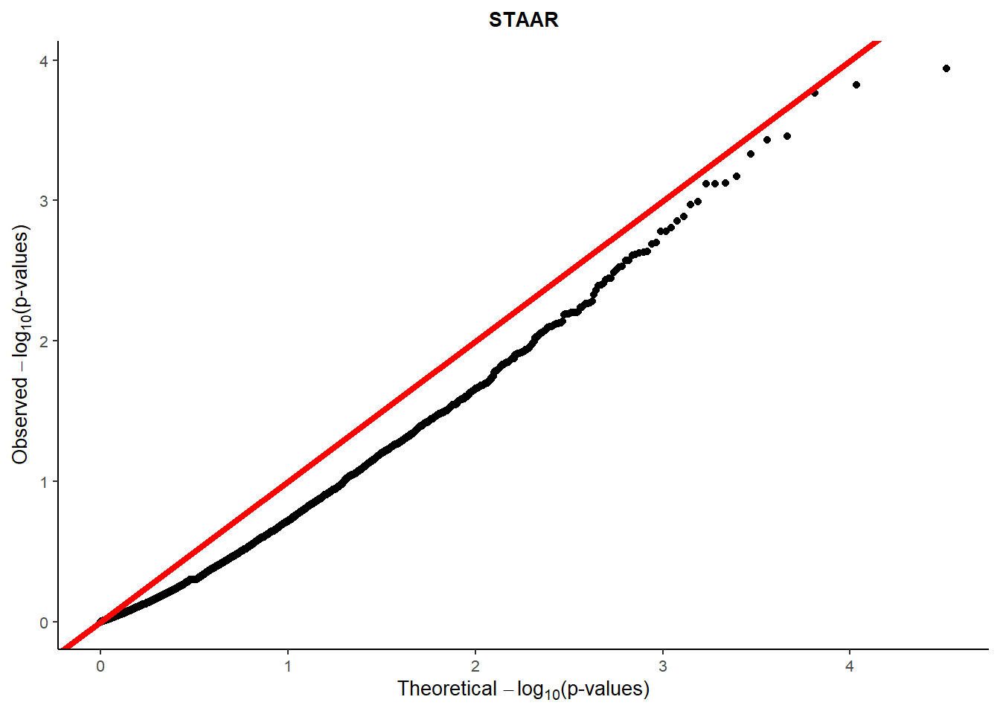

QQ plot of burden and ACAT
2023-11-07
QQ plot of STAAR
staar_pvalue=as_tibble(read.csv("../output/LauraData/AllGene_6vargroups_ACAT_pvalue_2023_1108.csv"))
theo <- (ppoints(length(staar_pvalue$ACAT_pvalue)))
#qqplot(-log(theo, base=10), -log(Burden.pvalue, base=10), xlab=expression(paste("Theoretical ",-log[10], "(p-values)")), ylab=expression(paste("Observed ", -log[10], "(p-values)")), main="(A) Burden", frame=F, cex.lab=0.8, pch=20)
#abline(0,1,col='red', lwd=2)
################# use ggplot draw qq plot
sx <- sort(-log(theo, base=10)); sy <- sort(-log(staar_pvalue$ACAT_pvalue, base=10))
lenx <- length(sx)
leny <- length(sy)
if (leny < lenx)sx <- approx(1L:lenx, sx, n = leny)$y
if (leny > lenx)sy <- approx(1L:leny, sy, n = lenx)$y
burden=tibble(sx=sx, sy=sy)
ggplot(burden) + geom_point(aes(x=sx, y=sy))+
theme_classic()+
xlab(expression(paste("Theoretical ",-log[10], "(p-values)")))+
ylab(expression(paste("Observed ", -log[10], "(p-values)")))+
theme(plot.title = element_text(hjust = 0.5, size=10,face="bold"))+ #center the title+
ggtitle("STAAR")+
geom_abline(intercept = 0, slope = 1, color="red",
linetype="solid", size=1.5)+
theme(text = element_text(size=10))
for STAAR analysis
apply AF filter \(AF<5\%\)
within each of 6 variant groups, use ACAT-V to combine single variant p values of binomial test using weights in the paper \(w_{i, ACAT-V}=Beta(MAF_i, a1=1, a2=25)*\sqrt{MAF_i(1-MAF_i)}\). Variants with MAC<10 are collapsed for burden test, with weight \(w_{0, ACAT-V}\).
use ACAT-O to combine 6 group level ACAT p values in the last step with equal weight as in the paper, as STAAR p value for each gene.
all variants have valid AF and those with
NAAF are removed
QQ plot of burden
plotQQ.unif <- function(p.obs) {
obs <- (p.obs)
theo <- (ppoints(length(obs)))
qqplot(-log(theo, base=10), -log(obs, base=10), xlab=expression(paste("Theoretical ",-log[10], "(p-values)")), ylab=expression(paste("Observed ", -log[10], "(p-values)")), main="A")
abline(0,1,col='red')
}burden_pvalues_001=as_tibble(read.csv("../output/LauraData/All_inherited_variants_6vargroups_burden_binom_oneside_pvalues_MPC_larger_than2_2023_1108.csv"))
combine_001=as_tibble(read.csv("../output/LauraData/All_inherited_variants_6vargroups_burden_counts_binom_oneside_pvalues_MPC_larger_than2_2023_1108.csv"))
####################### John storey's q value
#### install qvalue package
#install.packages("devtools")
#library("devtools")
#install_github("jdstorey/qvalue") https://github.com/StoreyLab/qvalue
#library(qvalue)
#qobj.burden=qvalue(Burden.pvalue)
#localFDR.burden <- qobj.burden$lfdr
#min(localFDR.burden, na.rm=T)
#qobj.SKATO=qvalue(SKATO.pvalue)
#localFDR.SKATO <- qobj.SKATO$lfdr
#min(localFDR.SKATO, na.rm=T)
#######################
#pdf("C:/Users/han24/OneDrive - UWM/rare-var/Figure/Supp/Fig-pvalue_QQplot_othermethod_ASD_topconstgene.pdf")
#par(mfrow=c(1,2))
theo <- (ppoints(length(burden_pvalues_001$LoF_pvalue)))
#qqplot(-log(theo, base=10), -log(Burden.pvalue, base=10), xlab=expression(paste("Theoretical ",-log[10], "(p-values)")), ylab=expression(paste("Observed ", -log[10], "(p-values)")), main="(A) Burden", frame=F, cex.lab=0.8, pch=20)
#abline(0,1,col='red', lwd=2)
################# use ggplot draw qq plot
sx <- sort(-log(theo, base=10)); sy <- sort(-log(burden_pvalues_001$LoF_pvalue, base=10))
lenx <- length(sx)
leny <- length(sy)
if (leny < lenx)sx <- approx(1L:lenx, sx, n = leny)$y
if (leny > lenx)sy <- approx(1L:leny, sy, n = lenx)$y
burden=tibble(sx=sx, sy=sy)
qqplot_burden_LoF=ggplot(burden) + geom_point(aes(x=sx, y=sy))+
theme_classic()+
xlab(expression(paste("Theoretical ",-log[10], "(p-values)")))+
ylab(expression(paste("Observed ", -log[10], "(p-values)")))+
theme(plot.title = element_text(hjust = 0.5, size=10,face="bold"))+ #center the title+
ggtitle("LoF")+
geom_abline(intercept = 0, slope = 1, color="red",
linetype="solid", size=1.5)+
theme(text = element_text(size=10))
#qqplot_burden_LoF
#################
theo <- (ppoints(length(burden_pvalues_001$LoF.Missense_pvalue)))
sx <- sort(-log(theo, base=10)); sy <- sort(-log(burden_pvalues_001$LoF.Missense_pvalue, base=10))
lenx <- length(sx)
leny <- length(sy)
if (leny < lenx)sx <- approx(1L:lenx, sx, n = leny)$y
if (leny > lenx)sy <- approx(1L:leny, sy, n = lenx)$y
LoF.Missense=tibble(sx=sx, sy=sy)
qqplot_burden_LoF.Missense=ggplot(LoF.Missense) + geom_point(aes(x=sx, y=sy))+
theme_classic()+
xlab(expression(paste("Theoretical ",-log[10], "(p-values)")))+
ylab(expression(paste("Observed ", -log[10], "(p-values)")))+
#ylab("")+
theme(plot.title = element_text(hjust = 0.5, size=10,face="bold"))+ #center the title+
ggtitle("LoF+MPC>2")+
geom_abline(intercept = 0, slope = 1, color="red",
linetype="solid", size=1.5)+
theme(text = element_text(size=10))
#qqplot_burden_LoF.Missense
################################
theo <- (ppoints(length(burden_pvalues_001$fisher_combine_pvalue)))
sx <- sort(-log(theo, base=10)); sy <- sort(-log(burden_pvalues_001$fisher_combine_pvalue, base=10))
lenx <- length(sx)
leny <- length(sy)
if (leny < lenx)sx <- approx(1L:lenx, sx, n = leny)$y
if (leny > lenx)sy <- approx(1L:leny, sy, n = lenx)$y
fisher.combine=tibble(sx=sx, sy=sy)
qqplot_burden_fisher.combine=ggplot(fisher.combine) + geom_point(aes(x=sx, y=sy))+
theme_classic()+
xlab(expression(paste("Theoretical ",-log[10], "(p-values)")))+
ylab(expression(paste("Observed ", -log[10], "(p-values)")))+
#ylab("")+
theme(plot.title = element_text(hjust = 0.5, size=10,face="bold"))+ #center the title+
ggtitle("Fisher combine LoF+MPC>2")+
geom_abline(intercept = 0, slope = 1, color="red",
linetype="solid", size=1.5)+
theme(text = element_text(size=10))
#qqplot_burden_fisher.combine
#png("C:/Users/han24/OneDrive - UWM/rare-var/Figure/Supp/Fig-pvalue_QQplot_ASD_topconstgene_enrichemnt.png")
figure=ggarrange(qqplot_burden_LoF, qqplot_burden_LoF.Missense, qqplot_burden_fisher.combine, nrow=1)
annotate_figure(figure,
top = text_grob("", color = "red", face = "bold", size = 14),
# bottom = text_grob("Datasource: \n ToothGrowth data set", color = "blue",
# hjust = 1, x = 1, face = "italic", size = 10),
# left = text_grob("Tooth length", color = "green", rot = 90),
# right = "I'm done, thanks :-)!",
# fig.lab = "Figure 1", fig.lab.face = "bold"
)
#dev.off()This R Markdown site was created with workflowr